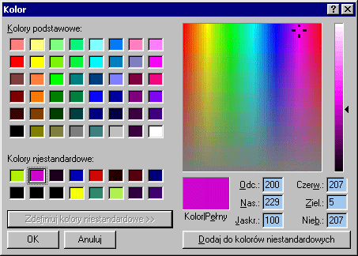
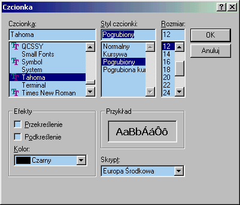

| << Poprzednia czêœæ kursu Spis Strona g³ówna Nastêpna czêœæ kursu >> |
Wiêc chodŸ, pomaluj mój œwiat na ¿ó³to i na niebieeeesko! No dobra, ale najpierw przyda³oby siê wybraæ te kolory, bo inaczej pomalujemy œwiat na czarno, a przecie¿ nie jesteœmy ¿adnymi wrednymi satanistami (bez wzglêdu na to, co sugeruje nazwa tej strony ;-)) i kolorki lubimy. Dialog, jaki sobie tym razem wyczarujemy, wygl¹da nastêpuj¹co:

Czarowanie rozpoczniemy, jak siê pewnie domyœlasz, od przedstawienia nowej struktury. Bêdzie to struktura typu CHOOSECOLOR:
|
typedef struct { // cc DWORD lStructSize; HWND hwndOwner; HWND hInstance; COLORREF rgbResult; COLORREF* lpCustColors; DWORD Flags; LPARAM lCustData; LPCCHOOKPROC lpfnHook; LPCTSTR lpTemplateName; } CHOOSECOLOR; |
Jak widzisz, w porównaniu z OPENFILENAME nie ma siê czego baæ :-). Zreszt¹ znów mo¿emy bezczelnie pomin¹æ kilka pól, które na razie nam siê nie przydadz¹. Dwa pierwsze pola ju¿ znasz, takie same by³y w strukturze OPENFILENAME. Znaczenia czwartego i pi¹tego siê pewnie domyœlasz - tak, tu bêdzie przechowywany rezultat dialogu.
Zwróæ uwagê na pole lpCustColors. Powinien on wskazywaæ na tablicê 16 kolorów. Musimy j¹ sobie sami stworzyæ. Jak widaæ, na dialogu wyboru koloru mamy 48 predefiniowanych (standardowych) kolorów - tych zmieniaæ nie mo¿emy, mo¿na je tylko wybraæ, oraz 16 kolorów niestandardowych, definiowanych przez u¿ytkownika. To w³aœnie na nie jest ta tablica. Jeœli jej nie utworzymy, dialog nie bêdzie mia³ gdzie przechowywaæ danych o tych kolorach.
Tablicê, wskazywan¹ przez lpCustColors dobrze jest zainicjalizowaæ, albo przynajmniej wyzerowaæ funkcj¹ ZeroMemory. Jeœli tego nie zrobimy, to nic z³ego siê nie stanie, po prostu dialog bêdzie wyœwietla³ 16 przypadkowych kolorów.
Nie pozostaje nic innego, jak tylko wype³niæ strukturê i wywo³aæ dialog na scenê:
|
CHOOSECOLOR ccl; COLORREF TabKol[16]; BOOL bResult; ZeroMemory(&ccl, sizeof(CHOOSECOLOR)); ccl.lStructSize = sizeof(CHOOSECOLOR); ccl.hwndOwner = hwnd; ccl.lpCustColors = TabKol; ccl.Flags = CC_ANYCOLOR; bResult = ChooseColor(&ccl); |
Jeœli wszystko pójdzie zgodnie z planem, to funkcja ChooseColor zwróci TRUE. W przeciwnym wypadku bêdziemy musieli wywo³aæ specjaln¹ funkcjê CommDlgExtendedError w celu sprawdzenia, jaki konkretnie b³¹d wyst¹pi³. Jeœli ChooseColor zwróci FALSE, ale CommDlgExtendedError zwróci 0, bêdzie to oznacza³o, ¿e ¿adnego b³êdu nie by³o, tylko u¿ytkownik wcisn¹³ przycisk Anuluj:
|
DWORD dwErr; bResult = ChooseColor(&ccl); if(bResult) MessageBox(hwnd, "Wybrano nowy kolor", "test", MB_ICONINFORMATION); else { dwErr = CommDlgExtendedError(); if(!dwErr) MessageBox(hwnd, "Anulowano wybór koloru", "test", MB_ICONEXCLAMATION); else MessageBox(hwnd, "Wyst¹pi³ jakowyœ b³¹d", "test", MB_ICONSTOP); } |
Ten przyk³ad ilustruje tylko samo wywo³anie dialogu, nie robi nic z wybranym kolorem (który zwracany jest w polu rgbResult, jak nietrudno siê domyœliæ) ani nawet nie sprawdza, czy u¿ytkownik wybra³ w ogóle jakiœ kolor. To wszystko pozostawiam tobie do samodzielnych eksperymentów.
Z wyborem czcionek sprawa ma siê podobnie. Tym razem struktura nazywa siê CHOOSEFONT, a funkcja otwieraj¹ca dialog - ChooseFont. Mamy te¿ i flagi - w wiêkszoœci oznaczaj¹ one rodzaje czcionek, jakie maj¹ byæ dostêpne do wyboru:
|
typedef struct { // cf DWORD lStructSize; HWND hwndOwner; HDC hDC; LPLOGFONT lpLogFont; INT iPointSize; DWORD Flags; DWORD rgbColors; LPARAM lCustData; LPCFHOOKPROC lpfnHook; LPCTSTR lpTemplateName; HINSTANCE hInstance; LPTSTR lpszStyle; WORD nFontType; WORD ___MISSING_ALIGNMENT__; INT nSizeMin; INT nSizeMax; } CHOOSEFONT; |
Trochê tego wiêcej ni¿ ostatnio, ale nie marudzimy i zabieramy siê do roboty:
|
CHOOSEFONT cfnt; LOGFONT lf; ZeroMemory(&cfnt, sizeof(CHOOSEFONT)); cfnt.lStructSize = sizeof(CHOOSEFONT); cfnt.hwndOwner = hwnd; cfnt.Flags = CF_EFFECTS | CF_FORCEFONTEXIST | CF_SCREENFONTS; cfnt.lpLogFont = &lf; |
Podobnie jak w przypadku dialogu z kolorkami, tutaj równie¿ potrzebujemy w³asnej zmiennej, tym razem typu LOGFONT. WskaŸnik do niej musimy przekazaæ w polu lpLogFont (ostatnia linijka przyk³adu). Jest to bardzo wa¿ne, gdy¿ inaczej dialog nie bêdzie mia³ gdzie zapamiêtaæ wybranej czcionki. Gdybyœmy dorzucili do flag CF_INITTOLOGFONTSTRUCT, a zmienna lf zawiera³aby ju¿ prawid³owy opis czcionki, to dialog przyj¹³by tê czcionkê za domyœln¹.

U¿yliœmy trzech flag, jak widaæ. Pierwsza, CF_EFFECTS, oznacza ¿e dialog powinien umo¿liwiaæ wybór efektów dla czcionki. Te efekty to: podkreœlenie, przekreœlenie oraz kolor. Nie s¹ to zbyt potrzebne rzeczy, ale domyœlnie s¹ ukryte, co paskudnie wygl¹da.
Flaga CF_FORCEFONTEXIST oznacza, ¿e u¿ytkownik musi wybraæ istniej¹c¹ czcionkê. Jeœli menda wpisze z³oœliwie coœ dziwnego w pole z nazw¹ czcionki, a ta flaga jest ustawiona, to system ochrzani u¿ytkownika za pisanie g³upot ;-).
No i wreszcie CF_SCREENFONTS mówi systemowi, ¿e ma nam wyœwietliæ tylko czcionki ekranowe. Gdyby by³a taka potrzeba, moglibyœmy wyœwietliæ tylko czcionki drukarki (flaga CF_PRINTERFONTS) albo i jedne, i drugie (flaga CF_BOTH). Jeœli natomiast nie damy ¿adnej z wymienionych w tym akapicie trzech flag, to dostaniemy uroczy (i absurdalny) komunikat, ¿e nie zainstalowano ¿adnych czcionek w systemie, a nastêpnie funkcja ChooseFont zwróci FALSE, co oznacza b³¹d.
Jeœli jednak do takiej nieweso³ej sytuacji nie dosz³o, to ChooseFont zwraca TRUE i wówczas mo¿emy skorzystaæ z kilku nastêpnych pól naszej struktury CHOOSEFONT, a¿eby uzyskaæ informacje o wybranej przez u¿ytkownika czcionce. Pole iPointSize bêdzie wówczas zawiera³o wybrany rozmiar czcionki, rgbColors - jej kolor, nFontType - typ czcionki (zawiera informacjê o pogrubieniu / pochyleniu czcionki, o tym czy jest to czcionka ekranowa czy te¿ czcionka drukarki itp.). No i najwa¿niejsze pole - lpLogFont bêdzie zawiera³o wskaŸnik do struktury LOGFONT, opisuj¹cej wybran¹ czcionkê.
Pozostaje pytanie, jak wykorzystaæ informacje zawarte w LOGFONT... Wiemy bowiem, ¿e aby wybraæ czcionkê dla danego kontekstu, podajemu uchwyt do niej (typu HFONT). Na szczêœcie uzyskanie uchwytu na podstawie struktury LOGFONT nie jest to zbyt skomplikowane. S³u¿y do tego funkcja CreateFontIndirect:
|
HFONT hfnMyFont; hfnMyFont = CreateFontIndirect(cfnt.lpLogFont); if(hfnMyFont == NULL) MessageBox(hwnd, "Wredna czciona nie chce siê utworzyæ...", NULL, MB_ICONEXCLAMATION); |
Pora na krótki przyk³ad zastosowania. Za³ó¿my, ¿e mamy EDIT-a o globalnym uchwycie g_hEdit, przycisk (o uchwycie g_hButton) do otwierania dialogu wyboru czcionki oraz globalny uchwyt g_hfnNowy typu HFONT (domyœlnie ustawiony na NULL):
|
case WM_COMMAND: { if( (HWND)lParam != g_hButton ) break; CHOOSEFONT cfnt; LOGFONT lf; ZeroMemory(&cfnt, sizeof(CHOOSEFONT)); cfnt.lStructSize = sizeof(CHOOSEFONT); cfnt.hwndOwner = hwnd; cfnt.Flags = CF_EFFECTS | CF_FORCEFONTEXIST | CF_SCREENFONTS; cfnt.lpLogFont = &lf; if(!ChooseFont(&cfnt)) { DWORD dwErr = CommDlgExtendedError(); if(dwErr) MessageBox(hwnd, "Straszliwy b³¹d dialogu!", NULL, MB_ICONEXCLAMATION); } else { if(g_hfnNowy != NULL) DeleteObject(g_hfnNowy); g_hfnNowy = CreateFontIndirect(cfnt.lpLogFont); if(hfnNowy != NULL) SendMessage(g_hEdit, WM_SETFONT, (WPARAM)hfnNowy, MAKELPARAM(TRUE,0)); } } break; case WM_DESTROY: { if(g_hfnNowy != NULL) DeleteObject(g_hfnNowy); PostQuitMessage(0); } break; |
Jak ³atwo siê przekonaæ (a dla niektórych wystarczy nawet spojrzeæ ;-)), powy¿szy kod sprawia, ¿e naciœniêcie przycisku otwiera dialog wyboru czcionki, a w przypadku gdyby u¿ytkownik by³ na tyle mi³y i wybra³ jak¹œ, to czcionka ta zostanie ustawiona dla pola tekstowego.
Do ustawienia czcionki dla okna (tutaj dla pola tekstowego) pos³u¿yliœmy siê komunikatem WM_SETFONT. Jego parametry to: uchwyt czcionki oraz flaga oznaczaj¹ca, czy po zmianie czcionki okno (kontrolka) ma byæ odœwie¿one (u nas jak najbardziej TRUE).
| << Poprzednia czêœæ kursu Spis Strona g³ówna Nastêpna czêœæ kursu >> |